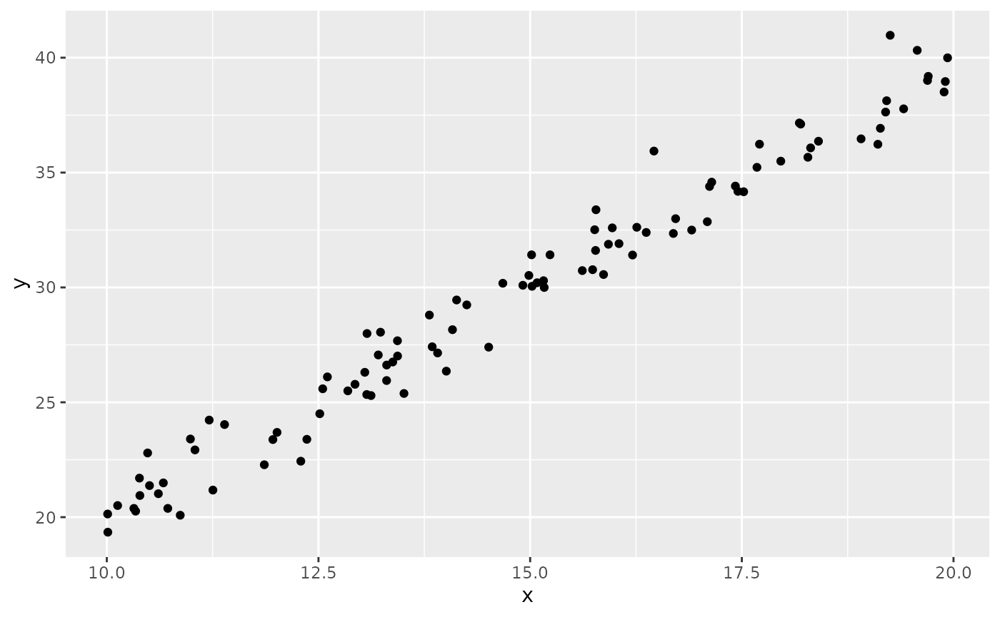
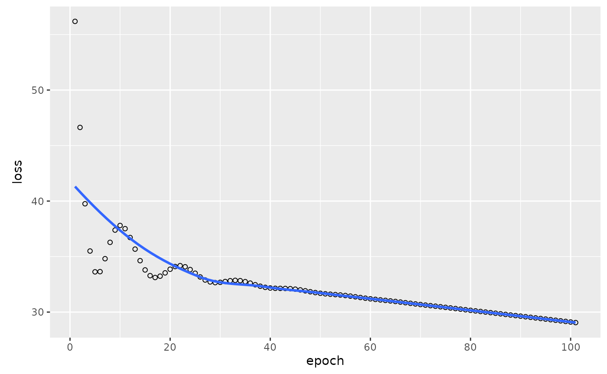
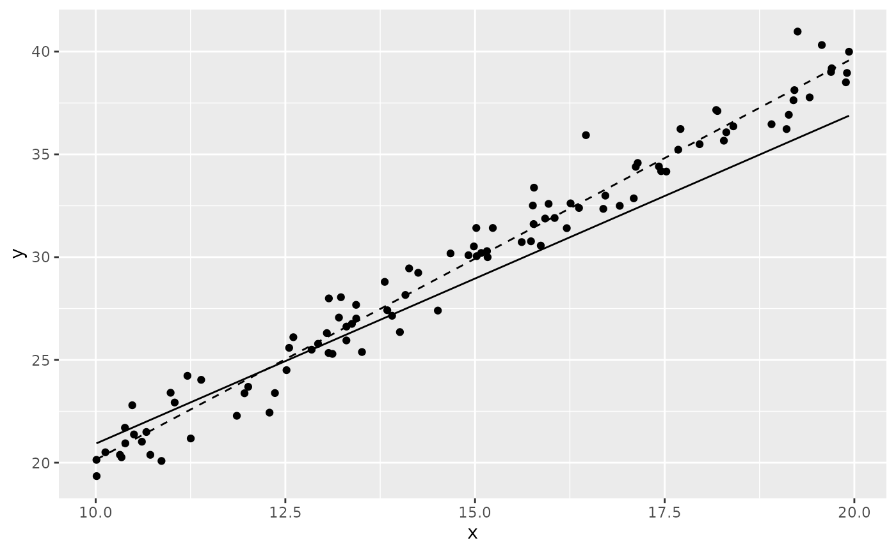

Overview
While reservr is capable of fitting distributions to censored and truncated observations, it does not directly allow modelling the influence of exogenous variables observed alongside the primary outcome. This is where the integration with TensorFlow comes in.
The TensorFlow integration allows to fit a neural network simultaneously to all parameters of a distribution while taking exogenous variables into account.
reservr accepts all partial tensorflow networks which yield a single arbitrary-dimension rank 2 tensor (e.g. any dense layer) as output and can connect suitable layers to this intermediate output such that the complete network predicts the parameters of any pre-specified distribution family.
It also dynamically compiles a suitable conditional likelihood based
loss, depending on the type of problem (censoring, truncation), which
can be optimized using the keras3::fit implementation
out-of-the box. This means there is full flexibility with respect to
callbacks, optimizers, mini-batching, etc.
library(reservr)
library(tensorflow)
library(keras3)
#>
#> Attaching package: 'keras3'
#> The following objects are masked from 'package:tensorflow':
#>
#> set_random_seed, shapeA simple linear model
The following example will show the code necessary to fit a simple model with the same assumptions as OLS to data. As a true relationship we use \(y = 2 x + \epsilon\) with \(\epsilon \sim \mathcal{N}(0, 1)\). We will not use censoring or truncation.
if (reticulate::py_module_available("keras")) {
set.seed(1431L)
tensorflow::set_random_seed(1432L)
dataset <- tibble(
x = runif(100, min = 10, max = 20),
y = 2 * x + rnorm(100)
)
print(qplot(x, y, data = dataset))
# Specify distributional assumption of OLS:
dist <- dist_normal(sd = 1.0) # OLS assumption: homoskedasticity
# Optional: Compute a global fit
global_fit <- fit(dist, dataset$y)
# Define a neural network
nnet_input <- layer_input(shape = 1L, name = "x_input")
# in practice, this would be deeper
nnet_output <- nnet_input
optimizer <- optimizer_adam(learning_rate = 0.1)
nnet <- tf_compile_model(
inputs = list(nnet_input),
intermediate_output = nnet_output,
dist = dist,
optimizer = optimizer,
censoring = FALSE, # Turn off unnecessary features for this problem
truncation = FALSE
)
nnet_fit <- fit(nnet, x = dataset$x, y = dataset$y, epochs = 100L, batch_size = 100L, shuffle = FALSE)
# Fix weird behavior of keras3
nnet_fit$params$epochs <- max(nnet_fit$params$epochs, length(nnet_fit$metrics$loss))
print(plot(nnet_fit))
pred_params <- predict(nnet, data = list(as_tensor(dataset$x, config_floatx())))
lm_fit <- lm(y ~ x, data = dataset)
dataset$y_pred <- pred_params$mean
dataset$y_lm <- predict(lm_fit, newdata = dataset, type = "response")
p <- ggplot(dataset, aes(x = x, y = y)) %+%
geom_point() %+%
geom_line(aes(y = y_pred)) %+%
geom_line(aes(y = y_lm), linetype = 2L)
print(p)
coef_nnet <- rev(as.numeric(nnet$model$get_weights()))
coef_lm <- coef(lm_fit)
print(coef_nnet)
print(coef_lm)
}
#> Warning: `qplot()` was deprecated in ggplot2 3.4.0.
#> This warning is displayed once every 8 hours.
#> Call `lifecycle::last_lifecycle_warnings()` to see where this warning was
#> generated.
#> Epoch 0/100
#> 1/1 ━━━━━━━━━━━━━━━━━━━━ 0s 460ms/step - loss: 56.18431/1 ━━━━━━━━━━━━━━━━━━━━ 0s 463ms/step - loss: 56.1843
#> Epoch 1/100
#> 1/1 ━━━━━━━━━━━━━━━━━━━━ 0s 12ms/step - loss: 46.63251/1 ━━━━━━━━━━━━━━━━━━━━ 0s 13ms/step - loss: 46.6325
#> Epoch 2/100
#> 1/1 ━━━━━━━━━━━━━━━━━━━━ 0s 11ms/step - loss: 39.75831/1 ━━━━━━━━━━━━━━━━━━━━ 0s 12ms/step - loss: 39.7583
#> Epoch 3/100
#> 1/1 ━━━━━━━━━━━━━━━━━━━━ 0s 11ms/step - loss: 35.50141/1 ━━━━━━━━━━━━━━━━━━━━ 0s 12ms/step - loss: 35.5014
#> Epoch 4/100
#> 1/1 ━━━━━━━━━━━━━━━━━━━━ 0s 11ms/step - loss: 33.62621/1 ━━━━━━━━━━━━━━━━━━━━ 0s 12ms/step - loss: 33.6262
#> Epoch 5/100
#> 1/1 ━━━━━━━━━━━━━━━━━━━━ 0s 11ms/step - loss: 33.64411/1 ━━━━━━━━━━━━━━━━━━━━ 0s 12ms/step - loss: 33.6441
#> Epoch 6/100
#> 1/1 ━━━━━━━━━━━━━━━━━━━━ 0s 11ms/step - loss: 34.80991/1 ━━━━━━━━━━━━━━━━━━━━ 0s 12ms/step - loss: 34.8099
#> Epoch 7/100
#> 1/1 ━━━━━━━━━━━━━━━━━━━━ 0s 11ms/step - loss: 36.28141/1 ━━━━━━━━━━━━━━━━━━━━ 0s 12ms/step - loss: 36.2814
#> Epoch 8/100
#> 1/1 ━━━━━━━━━━━━━━━━━━━━ 0s 11ms/step - loss: 37.38771/1 ━━━━━━━━━━━━━━━━━━━━ 0s 12ms/step - loss: 37.3877
#> Epoch 9/100
#> 1/1 ━━━━━━━━━━━━━━━━━━━━ 0s 11ms/step - loss: 37.80121/1 ━━━━━━━━━━━━━━━━━━━━ 0s 12ms/step - loss: 37.8012
#> Epoch 10/100
#> 1/1 ━━━━━━━━━━━━━━━━━━━━ 0s 11ms/step - loss: 37.51511/1 ━━━━━━━━━━━━━━━━━━━━ 0s 12ms/step - loss: 37.5151
#> Epoch 11/100
#> 1/1 ━━━━━━━━━━━━━━━━━━━━ 0s 12ms/step - loss: 36.71811/1 ━━━━━━━━━━━━━━━━━━━━ 0s 12ms/step - loss: 36.7181
#> Epoch 12/100
#> 1/1 ━━━━━━━━━━━━━━━━━━━━ 0s 11ms/step - loss: 35.67251/1 ━━━━━━━━━━━━━━━━━━━━ 0s 12ms/step - loss: 35.6725
#> Epoch 13/100
#> 1/1 ━━━━━━━━━━━━━━━━━━━━ 0s 11ms/step - loss: 34.63281/1 ━━━━━━━━━━━━━━━━━━━━ 0s 12ms/step - loss: 34.6328
#> Epoch 14/100
#> 1/1 ━━━━━━━━━━━━━━━━━━━━ 0s 11ms/step - loss: 33.79741/1 ━━━━━━━━━━━━━━━━━━━━ 0s 12ms/step - loss: 33.7974
#> Epoch 15/100
#> 1/1 ━━━━━━━━━━━━━━━━━━━━ 0s 11ms/step - loss: 33.28291/1 ━━━━━━━━━━━━━━━━━━━━ 0s 12ms/step - loss: 33.2829
#> Epoch 16/100
#> 1/1 ━━━━━━━━━━━━━━━━━━━━ 0s 11ms/step - loss: 33.11521/1 ━━━━━━━━━━━━━━━━━━━━ 0s 12ms/step - loss: 33.1152
#> Epoch 17/100
#> 1/1 ━━━━━━━━━━━━━━━━━━━━ 0s 11ms/step - loss: 33.23721/1 ━━━━━━━━━━━━━━━━━━━━ 0s 12ms/step - loss: 33.2372
#> Epoch 18/100
#> 1/1 ━━━━━━━━━━━━━━━━━━━━ 0s 11ms/step - loss: 33.53231/1 ━━━━━━━━━━━━━━━━━━━━ 0s 12ms/step - loss: 33.5323
#> Epoch 19/100
#> 1/1 ━━━━━━━━━━━━━━━━━━━━ 0s 12ms/step - loss: 33.86181/1 ━━━━━━━━━━━━━━━━━━━━ 0s 12ms/step - loss: 33.8618
#> Epoch 20/100
#> 1/1 ━━━━━━━━━━━━━━━━━━━━ 0s 12ms/step - loss: 34.10381/1 ━━━━━━━━━━━━━━━━━━━━ 0s 12ms/step - loss: 34.1038
#> Epoch 21/100
#> 1/1 ━━━━━━━━━━━━━━━━━━━━ 0s 12ms/step - loss: 34.18291/1 ━━━━━━━━━━━━━━━━━━━━ 0s 13ms/step - loss: 34.1829
#> Epoch 22/100
#> 1/1 ━━━━━━━━━━━━━━━━━━━━ 0s 12ms/step - loss: 34.08131/1 ━━━━━━━━━━━━━━━━━━━━ 0s 13ms/step - loss: 34.0813
#> Epoch 23/100
#> 1/1 ━━━━━━━━━━━━━━━━━━━━ 0s 12ms/step - loss: 33.83221/1 ━━━━━━━━━━━━━━━━━━━━ 0s 12ms/step - loss: 33.8322
#> Epoch 24/100
#> 1/1 ━━━━━━━━━━━━━━━━━━━━ 0s 12ms/step - loss: 33.50171/1 ━━━━━━━━━━━━━━━━━━━━ 0s 12ms/step - loss: 33.5017
#> Epoch 25/100
#> 1/1 ━━━━━━━━━━━━━━━━━━━━ 0s 12ms/step - loss: 33.16641/1 ━━━━━━━━━━━━━━━━━━━━ 0s 12ms/step - loss: 33.1664
#> Epoch 26/100
#> 1/1 ━━━━━━━━━━━━━━━━━━━━ 0s 12ms/step - loss: 32.89201/1 ━━━━━━━━━━━━━━━━━━━━ 0s 12ms/step - loss: 32.8920
#> Epoch 27/100
#> 1/1 ━━━━━━━━━━━━━━━━━━━━ 0s 12ms/step - loss: 32.71911/1 ━━━━━━━━━━━━━━━━━━━━ 0s 12ms/step - loss: 32.7191
#> Epoch 28/100
#> 1/1 ━━━━━━━━━━━━━━━━━━━━ 0s 12ms/step - loss: 32.65621/1 ━━━━━━━━━━━━━━━━━━━━ 0s 12ms/step - loss: 32.6562
#> Epoch 29/100
#> 1/1 ━━━━━━━━━━━━━━━━━━━━ 0s 11ms/step - loss: 32.68181/1 ━━━━━━━━━━━━━━━━━━━━ 0s 12ms/step - loss: 32.6818
#> Epoch 30/100
#> 1/1 ━━━━━━━━━━━━━━━━━━━━ 0s 11ms/step - loss: 32.75441/1 ━━━━━━━━━━━━━━━━━━━━ 0s 12ms/step - loss: 32.7544
#> Epoch 31/100
#> 1/1 ━━━━━━━━━━━━━━━━━━━━ 0s 11ms/step - loss: 32.82651/1 ━━━━━━━━━━━━━━━━━━━━ 0s 12ms/step - loss: 32.8265
#> Epoch 32/100
#> 1/1 ━━━━━━━━━━━━━━━━━━━━ 0s 12ms/step - loss: 32.85911/1 ━━━━━━━━━━━━━━━━━━━━ 0s 12ms/step - loss: 32.8591
#> Epoch 33/100
#> 1/1 ━━━━━━━━━━━━━━━━━━━━ 0s 11ms/step - loss: 32.83111/1 ━━━━━━━━━━━━━━━━━━━━ 0s 12ms/step - loss: 32.8311
#> Epoch 34/100
#> 1/1 ━━━━━━━━━━━━━━━━━━━━ 0s 11ms/step - loss: 32.74251/1 ━━━━━━━━━━━━━━━━━━━━ 0s 12ms/step - loss: 32.7425
#> Epoch 35/100
#> 1/1 ━━━━━━━━━━━━━━━━━━━━ 0s 12ms/step - loss: 32.61121/1 ━━━━━━━━━━━━━━━━━━━━ 0s 12ms/step - loss: 32.6112
#> Epoch 36/100
#> 1/1 ━━━━━━━━━━━━━━━━━━━━ 0s 11ms/step - loss: 32.46491/1 ━━━━━━━━━━━━━━━━━━━━ 0s 12ms/step - loss: 32.4649
#> Epoch 37/100
#> 1/1 ━━━━━━━━━━━━━━━━━━━━ 0s 11ms/step - loss: 32.33131/1 ━━━━━━━━━━━━━━━━━━━━ 0s 12ms/step - loss: 32.3313
#> Epoch 38/100
#> 1/1 ━━━━━━━━━━━━━━━━━━━━ 0s 11ms/step - loss: 32.23041/1 ━━━━━━━━━━━━━━━━━━━━ 0s 12ms/step - loss: 32.2304
#> Epoch 39/100
#> 1/1 ━━━━━━━━━━━━━━━━━━━━ 0s 11ms/step - loss: 32.16951/1 ━━━━━━━━━━━━━━━━━━━━ 0s 12ms/step - loss: 32.1695
#> Epoch 40/100
#> 1/1 ━━━━━━━━━━━━━━━━━━━━ 0s 11ms/step - loss: 32.14301/1 ━━━━━━━━━━━━━━━━━━━━ 0s 12ms/step - loss: 32.1430
#> Epoch 41/100
#> 1/1 ━━━━━━━━━━━━━━━━━━━━ 0s 11ms/step - loss: 32.13571/1 ━━━━━━━━━━━━━━━━━━━━ 0s 12ms/step - loss: 32.1357
#> Epoch 42/100
#> 1/1 ━━━━━━━━━━━━━━━━━━━━ 0s 12ms/step - loss: 32.12951/1 ━━━━━━━━━━━━━━━━━━━━ 0s 13ms/step - loss: 32.1295
#> Epoch 43/100
#> 1/1 ━━━━━━━━━━━━━━━━━━━━ 0s 11ms/step - loss: 32.10861/1 ━━━━━━━━━━━━━━━━━━━━ 0s 12ms/step - loss: 32.1086
#> Epoch 44/100
#> 1/1 ━━━━━━━━━━━━━━━━━━━━ 0s 11ms/step - loss: 32.06491/1 ━━━━━━━━━━━━━━━━━━━━ 0s 12ms/step - loss: 32.0649
#> Epoch 45/100
#> 1/1 ━━━━━━━━━━━━━━━━━━━━ 0s 11ms/step - loss: 31.99891/1 ━━━━━━━━━━━━━━━━━━━━ 0s 12ms/step - loss: 31.9989
#> Epoch 46/100
#> 1/1 ━━━━━━━━━━━━━━━━━━━━ 0s 12ms/step - loss: 31.91821/1 ━━━━━━━━━━━━━━━━━━━━ 0s 12ms/step - loss: 31.9182
#> Epoch 47/100
#> 1/1 ━━━━━━━━━━━━━━━━━━━━ 0s 11ms/step - loss: 31.83421/1 ━━━━━━━━━━━━━━━━━━━━ 0s 12ms/step - loss: 31.8342
#> Epoch 48/100
#> 1/1 ━━━━━━━━━━━━━━━━━━━━ 0s 11ms/step - loss: 31.75761/1 ━━━━━━━━━━━━━━━━━━━━ 0s 12ms/step - loss: 31.7576
#> Epoch 49/100
#> 1/1 ━━━━━━━━━━━━━━━━━━━━ 0s 11ms/step - loss: 31.69491/1 ━━━━━━━━━━━━━━━━━━━━ 0s 12ms/step - loss: 31.6949
#> Epoch 50/100
#> 1/1 ━━━━━━━━━━━━━━━━━━━━ 0s 11ms/step - loss: 31.64701/1 ━━━━━━━━━━━━━━━━━━━━ 0s 12ms/step - loss: 31.6470
#> Epoch 51/100
#> 1/1 ━━━━━━━━━━━━━━━━━━━━ 0s 11ms/step - loss: 31.60981/1 ━━━━━━━━━━━━━━━━━━━━ 0s 12ms/step - loss: 31.6098
#> Epoch 52/100
#> 1/1 ━━━━━━━━━━━━━━━━━━━━ 0s 12ms/step - loss: 31.57631/1 ━━━━━━━━━━━━━━━━━━━━ 0s 12ms/step - loss: 31.5763
#> Epoch 53/100
#> 1/1 ━━━━━━━━━━━━━━━━━━━━ 0s 11ms/step - loss: 31.53921/1 ━━━━━━━━━━━━━━━━━━━━ 0s 12ms/step - loss: 31.5392
#> Epoch 54/100
#> 1/1 ━━━━━━━━━━━━━━━━━━━━ 0s 11ms/step - loss: 31.49401/1 ━━━━━━━━━━━━━━━━━━━━ 0s 12ms/step - loss: 31.4940
#> Epoch 55/100
#> 1/1 ━━━━━━━━━━━━━━━━━━━━ 0s 11ms/step - loss: 31.43951/1 ━━━━━━━━━━━━━━━━━━━━ 0s 12ms/step - loss: 31.4395
#> Epoch 56/100
#> 1/1 ━━━━━━━━━━━━━━━━━━━━ 0s 11ms/step - loss: 31.37821/1 ━━━━━━━━━━━━━━━━━━━━ 0s 12ms/step - loss: 31.3782
#> Epoch 57/100
#> 1/1 ━━━━━━━━━━━━━━━━━━━━ 0s 11ms/step - loss: 31.31441/1 ━━━━━━━━━━━━━━━━━━━━ 0s 12ms/step - loss: 31.3144
#> Epoch 58/100
#> 1/1 ━━━━━━━━━━━━━━━━━━━━ 0s 12ms/step - loss: 31.25271/1 ━━━━━━━━━━━━━━━━━━━━ 0s 12ms/step - loss: 31.2527
#> Epoch 59/100
#> 1/1 ━━━━━━━━━━━━━━━━━━━━ 0s 11ms/step - loss: 31.19611/1 ━━━━━━━━━━━━━━━━━━━━ 0s 12ms/step - loss: 31.1961
#> Epoch 60/100
#> 1/1 ━━━━━━━━━━━━━━━━━━━━ 0s 11ms/step - loss: 31.14541/1 ━━━━━━━━━━━━━━━━━━━━ 0s 12ms/step - loss: 31.1454
#> Epoch 61/100
#> 1/1 ━━━━━━━━━━━━━━━━━━━━ 0s 11ms/step - loss: 31.09891/1 ━━━━━━━━━━━━━━━━━━━━ 0s 12ms/step - loss: 31.0989
#> Epoch 62/100
#> 1/1 ━━━━━━━━━━━━━━━━━━━━ 0s 11ms/step - loss: 31.05381/1 ━━━━━━━━━━━━━━━━━━━━ 0s 12ms/step - loss: 31.0538
#> Epoch 63/100
#> 1/1 ━━━━━━━━━━━━━━━━━━━━ 0s 11ms/step - loss: 31.00711/1 ━━━━━━━━━━━━━━━━━━━━ 0s 12ms/step - loss: 31.0071
#> Epoch 64/100
#> 1/1 ━━━━━━━━━━━━━━━━━━━━ 0s 11ms/step - loss: 30.95711/1 ━━━━━━━━━━━━━━━━━━━━ 0s 12ms/step - loss: 30.9571
#> Epoch 65/100
#> 1/1 ━━━━━━━━━━━━━━━━━━━━ 0s 11ms/step - loss: 30.90341/1 ━━━━━━━━━━━━━━━━━━━━ 0s 12ms/step - loss: 30.9034
#> Epoch 66/100
#> 1/1 ━━━━━━━━━━━━━━━━━━━━ 0s 11ms/step - loss: 30.84721/1 ━━━━━━━━━━━━━━━━━━━━ 0s 12ms/step - loss: 30.8472
#> Epoch 67/100
#> 1/1 ━━━━━━━━━━━━━━━━━━━━ 0s 11ms/step - loss: 30.79051/1 ━━━━━━━━━━━━━━━━━━━━ 0s 12ms/step - loss: 30.7905
#> Epoch 68/100
#> 1/1 ━━━━━━━━━━━━━━━━━━━━ 0s 12ms/step - loss: 30.73501/1 ━━━━━━━━━━━━━━━━━━━━ 0s 12ms/step - loss: 30.7350
#> Epoch 69/100
#> 1/1 ━━━━━━━━━━━━━━━━━━━━ 0s 16ms/step - loss: 30.68181/1 ━━━━━━━━━━━━━━━━━━━━ 0s 17ms/step - loss: 30.6818
#> Epoch 70/100
#> 1/1 ━━━━━━━━━━━━━━━━━━━━ 0s 12ms/step - loss: 30.63071/1 ━━━━━━━━━━━━━━━━━━━━ 0s 12ms/step - loss: 30.6307
#> Epoch 71/100
#> 1/1 ━━━━━━━━━━━━━━━━━━━━ 0s 11ms/step - loss: 30.58091/1 ━━━━━━━━━━━━━━━━━━━━ 0s 12ms/step - loss: 30.5809
#> Epoch 72/100
#> 1/1 ━━━━━━━━━━━━━━━━━━━━ 0s 11ms/step - loss: 30.53111/1 ━━━━━━━━━━━━━━━━━━━━ 0s 12ms/step - loss: 30.5311
#> Epoch 73/100
#> 1/1 ━━━━━━━━━━━━━━━━━━━━ 0s 11ms/step - loss: 30.48021/1 ━━━━━━━━━━━━━━━━━━━━ 0s 12ms/step - loss: 30.4802
#> Epoch 74/100
#> 1/1 ━━━━━━━━━━━━━━━━━━━━ 0s 11ms/step - loss: 30.42771/1 ━━━━━━━━━━━━━━━━━━━━ 0s 12ms/step - loss: 30.4277
#> Epoch 75/100
#> 1/1 ━━━━━━━━━━━━━━━━━━━━ 0s 11ms/step - loss: 30.37391/1 ━━━━━━━━━━━━━━━━━━━━ 0s 12ms/step - loss: 30.3739
#> Epoch 76/100
#> 1/1 ━━━━━━━━━━━━━━━━━━━━ 0s 11ms/step - loss: 30.31951/1 ━━━━━━━━━━━━━━━━━━━━ 0s 12ms/step - loss: 30.3195
#> Epoch 77/100
#> 1/1 ━━━━━━━━━━━━━━━━━━━━ 0s 11ms/step - loss: 30.26531/1 ━━━━━━━━━━━━━━━━━━━━ 0s 12ms/step - loss: 30.2653
#> Epoch 78/100
#> 1/1 ━━━━━━━━━━━━━━━━━━━━ 0s 11ms/step - loss: 30.21201/1 ━━━━━━━━━━━━━━━━━━━━ 0s 12ms/step - loss: 30.2120
#> Epoch 79/100
#> 1/1 ━━━━━━━━━━━━━━━━━━━━ 0s 11ms/step - loss: 30.15961/1 ━━━━━━━━━━━━━━━━━━━━ 0s 12ms/step - loss: 30.1596
#> Epoch 80/100
#> 1/1 ━━━━━━━━━━━━━━━━━━━━ 0s 11ms/step - loss: 30.10781/1 ━━━━━━━━━━━━━━━━━━━━ 0s 12ms/step - loss: 30.1078
#> Epoch 81/100
#> 1/1 ━━━━━━━━━━━━━━━━━━━━ 0s 11ms/step - loss: 30.05621/1 ━━━━━━━━━━━━━━━━━━━━ 0s 12ms/step - loss: 30.0562
#> Epoch 82/100
#> 1/1 ━━━━━━━━━━━━━━━━━━━━ 0s 11ms/step - loss: 30.00421/1 ━━━━━━━━━━━━━━━━━━━━ 0s 12ms/step - loss: 30.0042
#> Epoch 83/100
#> 1/1 ━━━━━━━━━━━━━━━━━━━━ 0s 11ms/step - loss: 29.95161/1 ━━━━━━━━━━━━━━━━━━━━ 0s 12ms/step - loss: 29.9516
#> Epoch 84/100
#> 1/1 ━━━━━━━━━━━━━━━━━━━━ 0s 12ms/step - loss: 29.89851/1 ━━━━━━━━━━━━━━━━━━━━ 0s 12ms/step - loss: 29.8985
#> Epoch 85/100
#> 1/1 ━━━━━━━━━━━━━━━━━━━━ 0s 11ms/step - loss: 29.84501/1 ━━━━━━━━━━━━━━━━━━━━ 0s 12ms/step - loss: 29.8450
#> Epoch 86/100
#> 1/1 ━━━━━━━━━━━━━━━━━━━━ 0s 11ms/step - loss: 29.79171/1 ━━━━━━━━━━━━━━━━━━━━ 0s 12ms/step - loss: 29.7917
#> Epoch 87/100
#> 1/1 ━━━━━━━━━━━━━━━━━━━━ 0s 11ms/step - loss: 29.73871/1 ━━━━━━━━━━━━━━━━━━━━ 0s 12ms/step - loss: 29.7387
#> Epoch 88/100
#> 1/1 ━━━━━━━━━━━━━━━━━━━━ 0s 11ms/step - loss: 29.68611/1 ━━━━━━━━━━━━━━━━━━━━ 0s 12ms/step - loss: 29.6861
#> Epoch 89/100
#> 1/1 ━━━━━━━━━━━━━━━━━━━━ 0s 11ms/step - loss: 29.63381/1 ━━━━━━━━━━━━━━━━━━━━ 0s 12ms/step - loss: 29.6338
#> Epoch 90/100
#> 1/1 ━━━━━━━━━━━━━━━━━━━━ 0s 12ms/step - loss: 29.58161/1 ━━━━━━━━━━━━━━━━━━━━ 0s 12ms/step - loss: 29.5816
#> Epoch 91/100
#> 1/1 ━━━━━━━━━━━━━━━━━━━━ 0s 11ms/step - loss: 29.52921/1 ━━━━━━━━━━━━━━━━━━━━ 0s 12ms/step - loss: 29.5292
#> Epoch 92/100
#> 1/1 ━━━━━━━━━━━━━━━━━━━━ 0s 11ms/step - loss: 29.47661/1 ━━━━━━━━━━━━━━━━━━━━ 0s 12ms/step - loss: 29.4766
#> Epoch 93/100
#> 1/1 ━━━━━━━━━━━━━━━━━━━━ 0s 11ms/step - loss: 29.42371/1 ━━━━━━━━━━━━━━━━━━━━ 0s 12ms/step - loss: 29.4237
#> Epoch 94/100
#> 1/1 ━━━━━━━━━━━━━━━━━━━━ 0s 12ms/step - loss: 29.37081/1 ━━━━━━━━━━━━━━━━━━━━ 0s 12ms/step - loss: 29.3708
#> Epoch 95/100
#> 1/1 ━━━━━━━━━━━━━━━━━━━━ 0s 11ms/step - loss: 29.31801/1 ━━━━━━━━━━━━━━━━━━━━ 0s 12ms/step - loss: 29.3180
#> Epoch 96/100
#> 1/1 ━━━━━━━━━━━━━━━━━━━━ 0s 11ms/step - loss: 29.26531/1 ━━━━━━━━━━━━━━━━━━━━ 0s 12ms/step - loss: 29.2653
#> Epoch 97/100
#> 1/1 ━━━━━━━━━━━━━━━━━━━━ 0s 11ms/step - loss: 29.21291/1 ━━━━━━━━━━━━━━━━━━━━ 0s 12ms/step - loss: 29.2129
#> Epoch 98/100
#> 1/1 ━━━━━━━━━━━━━━━━━━━━ 0s 11ms/step - loss: 29.16051/1 ━━━━━━━━━━━━━━━━━━━━ 0s 12ms/step - loss: 29.1605
#> Epoch 99/100
#> 1/1 ━━━━━━━━━━━━━━━━━━━━ 0s 11ms/step - loss: 29.10831/1 ━━━━━━━━━━━━━━━━━━━━ 0s 12ms/step - loss: 29.1083
#> Epoch 100/100
#> 1/1 ━━━━━━━━━━━━━━━━━━━━ 0s 12ms/step - loss: 29.05601/1 ━━━━━━━━━━━━━━━━━━━━ 0s 12ms/step - loss: 29.0560
#> [1] 4.854740 1.606937
#> (Intercept) x
#> 0.5645856 1.9574191